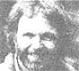

Issue # 74 - March/April 1982
This issue's column was guest-written-for Dr. Tom Ferguson-by the managing editor
For decades, scientists researching the health effects of cigarette smoking have observed a correlation between that habit and such illnesses as heart disease, lung cancer, and other tumors . . . but they've never been able to prove just how such a relationship might be brought about. Of course, it makes sense that cigarette smoke, which contains many proven carcinogens, could cause lung cancer from the simple accumulation of the harmful substances over a period of time . . . but-despite the fact that tens of millions of dollars have been spent on research-scientists still don't understand exactly why smokers face such a high risk of developing bladder and pancreatic cancers or atherosclerosis.
Now, however, a small group of medical experts-all of whom are highly respected specialists in the field of radiation hazard researchhave proposed an unusual (and frightening) explanation of the devastating health consequences of cigarette smoking. For the past 16 years, this group has gathered evidence to support what they call the "warm particle theory". Their line of reasoning asserts that insoluble low-level alpha-emitting radioactive particles in cigarette smoke trigger the majority of diseases associated with smoking. Or, to phrase it more directly: These experts claim that cigarettes are actually radioactive!
Tobacco, like all other organic matter-including soil, food, water, and our bodies-contains trace amounts of radioactive isotopes, most of which are soluble in water. When those particles enter the human body (which is more than 90% water), they are suspended in solution and then quickly and safely excreted.
Most tobacco-related radioactivity, therefore, simply washes out of the lungs. But some other radioactive particles are insoluble, so they accumulate in the lungs and bombard delicate tissue with low-level alpha radiation . . . the same kind of radia tion emitted by plutonium! Now alpha particles aren't particularly dangerous outside the body, but inside-and particularly in the lungs-they pose a serious health hazard.
According to Dr. John Gofman (former director of biomedical research at Lawrence Livermore Lab, author of the recently published book Radiation and Human Health, and subject of the Plowboy Interview in MOTHER NO. 68), the presence of even one one-millionth of a gram of plutonium in the lung virtually guarantees the development of cancer there within 20 years!
The specific alpha-emitter in tobacco smoke is polonium 210, a naturally occurring product-or "daughter"-of the decay of radium 226, which is, itself, a natural radioisotope. Polonium 210 was first isolated in cigarette smoke, in minute but significant amounts, by Dr. Edward P. Radford (professor of environmental epidemiology at the University of Pittsburgh and chairman of the prestigious Biological Effects of Ionizing Radiation-BEIR-Committee of the National Academy of Sciences) and Dr. Vilma Hunt (now a senior official in the Environmental Protection Agency).
In 1965, Radford and Hunt-along with several other researchers-published a report in the New England Journal of Medicine that related their findings of significant concentrations of polonium 210 in smokers' bronchial tissues. The article suggested that the cumulative dose of alpha radiation from years of smoking and inhaling polonium 210 might well be a key factor in the development of lung cancer.
Other scientists criticized the Radford-Hunt hypothesis, largely because they believed it unlikely that a relatively shortlived isotope such as polonium 210 (with a half-life of only 138 days) could expose lung tissue to enough radiation to cause cancer before its water-soluble particles were washed out of the lungs.
Further research was carried out in 1974-75 by Dr. Edward Martell, a radiochemist with the National Center for Atmospheric Research in Boulder, Colorado and the author of more than 75 scientific research papers. He discovered that the tiny leaf hairs on tobacco, called trichomes, attract high levels of lead 210 . . . another decay "daughter" of radium 226, which-unlike polonium 210-is carried into the lungs in insoluble smoke particles, and remains there for a 22-year halflife. In related experiments, Martell also found a rather startling match between the areas in which polonium 210 accumulates in the body and the sites of the major illnesses most often linked to smoking.
The findings of Martell's study-and of some related research-were published in a 1975 American Scientist article entitled "Tobacco Radioactivity and Cancer in Smokers". The conclusions reached in that report included the following points
[1] The unusually high levels of lead 210 found in tobacco trichomes (and in the smoke) result from heavy applications of phosphate fertilizers used in commercial tobacco farming. Those chemical preparations contain significant quantities of radium 226 and of its nine primary decay products.
[2] When tobacco is smoked, the insoluble lead 210 particles accumulate in the lungs. . . and as they decay into polonium 210, the small cell populations around the radioactive particles are subjected to "hits" of alpha radiation that are hundreds of times greater than naturally occurring background radiation levels.
[3] If the polonium 210 particles were highly radioactive-or "hot"-they'd kill lung cells immediately. But since they're merely "warm" isotopes, they kill only a few healthy cells and damage others . . . by altering their genetic coding (while still leaving them able to reproduce). Over succeeding cell generations, however, those that contain alpha-altered DNA material become cancerous as a result of receiving further alpha hits.
[4] Unexpectedly large amounts of 210 particles are found in smokers' lung tumors.
[5] Unexpectedly high levels of the 210's are also found in lymph nodes adjacent to the sites of smokers' secondary cancers, because some of the insoluble particles are picked up by the lymph system and circulated through the body . . . collecting in lymph nodes and irradiating nearby organs.
[6] Finally, those fatty arterial deposits that characterize atherosclerosis show "anomalously high concentrations of alpha activity" . . . suggesting a possible explanation for the high rate of early coronaries among cigarette smokers.
Martell's groundbreaking research report was received-for the most part-with indifference, a reaction that he attributes to the unfamiliarity of the ideas contained in the study. "You have to remember," says the scientist, "that the entire field of study concerned with the health effects of low-level radiation is considered new and controversial . . . most cigarette/ cancer researchers are still working on the chemistry of smoking, and as yet very little attention has been paid to its radiochemistry."
Ted Howard, a spokesman for the Tobacco Institute (the cigarette industry's lobbying organization in Washington), says that "several reputable scientific studies" have shown the warm particle theory to be "ludicrous". He cites, in particular, a 1980 Australian project that reported "no significant levels of alpha activity" in smokers' lungs. The catch, of course, is the word "significant". Although the Australian scientists found lower levels of alpha activity than those noted by advocates of the warm particle theory, the levels they reported were still ten tines greater than the alpha activity of lung cells not exposed to cigarette smoke.
BEIR Committee Chairman Radford said, "Martell hasn't proved the warm particle theory . . . but no one has refuted it, either. It is controversial, but it must be taken seriously." Radford added that he does remain skeptical of Martell's ideas about the specific role of alpha radiation in causing atherosclerosis.
Also skeptical-but eager to see more information-is Dr. Samuel Epstein, author of The Politics of Cancer and one of the nation's leading authorities on carcinogenesis. Epstein says the warm particle theory is "interesting", but he also cautions that "the question of causality has not yet been resolved" . . . particularly in regard to the relation between the 210's and atherosclerotic fat deposits. For that reason, he urges more research, noting, "I'm surprised by the lack of experimentation in the area.
" Ed Radford, however, is not so surprised. He maintains that the inertia surrounding the warm particle theory is largely due to the combined influence of two vested interests.
"The tobacco lobby and the nuclear energy lobby are two of the largest and most powerful in Washington," he says. "They don't control research funding, but I'd say they have a disproportionate influence over it. The nuclear industry doesn't want the warm particle theory to gain credibility because it would prove, once and for all, that low-level radiation is dangerous. That, in turn, would mean substantial downward revisions in radiation exposure limits . . . revisions the nuclear industry cannot afford. The tobacco industry, of course, doesn't want cigarettes labeled as radioactive, either. So it's a case where two major lobbies have parallel interests.
" The BEIR Committee-which includes several pronuclear scientists-has yet to pass judgment on Dr. Martell's findings . . . but Radford, for one, firmly believes that the concept provides the most likely explanation offered thus far for the development of lung cancer in smokers. He predicts "growing interest in the warm particle theory" in the next few years.
EDITOR'S NOTE: Dr. Tom Ferguson's quarterly journal,Medical Self-Care, is available for $15 per year from Medical SelfCare, Dept. TMEN, P.O. Box 717, Inverness, California 94937. A sample issue costs $4.00. Dr. Ferguson's book, also titled Medical Self-Care, can be ordered-for $8.95 plus 95 cents for shipping and handling-from Mother's Bookshelf(restricted); P.O. Box 70, Hendersonville, North Carolina 28791.
|
 |
|
|